금형기능사 (2002-04-07 기출문제)
1과목: 임의구분
1. 드로잉 가공된 통모양의 측벽을 얇게 가공하는 방법으로 밑바닥의 두께와 벽의 두께가 다른 용기를 얻을 수 있는 가공은 어느 것인가?
- 아이어닝 가공
- 역드로잉 가공
- 재드로잉 가공
- 드로잉 가공
(정답률: 53%)

2. 다이속에 놓여진 금속재에 펀치로 강한 압력을 가하여 다이의 개구부로 부터 펀치의 진행 방향으로 재료를 유출시켜 제품을 만드는 가공은?
- 충격 압출가공
- 후방 압출가공
- 전방 압출가공
- 업세팅 가공
(정답률: 51%)
3. 드로잉 가공된 용기의 바닥 부분 파단 대책으로 맞지 않는 것은?
- 펀치와 다이의 모서리 반지름을 크게 한다
- 블랭크 홀더의 압력을 조정하여 적당히 한다
- 블랭크 치수를 적당하게 하고 클리어런스를 작게한다
- 드로잉비를 적당히 하고 가공속도를 늦추며 적당한 윤활유를 선택한다
(정답률: 52%)
4. 두께가 2mm인 제품을 가공하기 위한 전단력이 4,000kgf이라면 스트립을 밀어내는 힘은 얼마인가? (단, ks = 10%로 한다)
- 800kgf
- 240kgf
- 400kgf
- 4000kgf
(정답률: 46%)
5. 프레스 기계의 규격을 나타내는 요소가 아닌 것은?
- 하중능력
- 토크능력
- 펀치높이
- 램조절량
(정답률: 36%)
6. 다음 중 열간가공의 장점이 아닌 것은?
- 결정입자의 미세화
- 방향성 있는 주조 조직의 제거
- 합금원소의 확산으로 인한 재질의 불균일화
- 연신율, 단면수축률, 충격치등 기계적 성질의 개선
(정답률: 76%)
7. 굽힘가공 에서 스프링 백 이란?
- 스프링의 피치를 나타낸다.
- 스프링에서 장력의 세기를 나타내는 척도이다.
- 판재를 구부렸을 때 구부린 모양이 활 모양으로 되는 현상이다.
- 판재를 구부릴 때 하중을 제거하면 탄성에 의하여 약간 처음의 상태로 돌아가는 것이다.
(정답률: 75%)
8. 프레스 작업시 주의할 사항 중 틀린 것은?
- 작업시작 후에 안전장치를 풀어 작업한다.
- 공구 다이를 조정할 때는 너트를 꼭 조일 것
- 운전 중 어떤 경우에도 공구날 밑에 손을 넣지 말 것
- 작업을 하기 전에는 반드시 공회전을 시켜 절단기의 상태를 점검할 것
(정답률: 85%)
9. 판이나 원통용기의 끝 부분에 원꼴 단면의 테두리를 만드는 가공법은?
- 컬링
- 버링
- 비딩
- 드로잉
(정답률: 37%)
10. 프레스 가공 중에서 전단가공에 속하지 않는 것은?
- 노칭가공
- 트리밍가공
- 업세팅가공
- 블랭킹가공
(정답률: 41%)
11. 다음 수지 중 열가소성 수지는 어느 것인가?
- 페놀수지
- ABS수지
- 멜라민수지
- 실리콘 수지
(정답률: 55%)
12. 성형품의 표면에 나타나는 오목한 부분을 말하며 성형품의 불량중에서도 가장 많이 발생한다. 원인으로는 수지 자체의 수축력에 의한 것과 금형의 열전도 불량 등에서 기인하는 경우가 있다. 이런 상태를 무엇이라고 부르는가?
- 크레이징(Crazing)
- 실버 스트리이크(Silver Streak)
- 플로우 마아크(Flow Mark)
- 싱크 마아크(Sink Mark)
(정답률: 50%)
13. 다음 그림과 같은 게이트의 특징으로 틀린 것은?
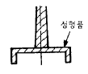
- 후가공이 필요없다.
- 게이트부 수축이 예상 된다.
- 압력손실이 적다.
- 성형성이 좋다.
(정답률: 55%)
14. 방전가공을 위한 위치결정 방법중 적용되지 않는 것은?
- 무게중심 기준방식
- 공작물중심 기준방식
- 구멍기준 방식
- 단면기준 방식
(정답률: 44%)
15. 상온에서의 금형 치수가 300 mm, 성형 수축률이 20/1000일 때 상온에서의 성형품의 치수는?
- 290 mm
- 294 mm
- 298 mm
- 306 mm
(정답률: 55%)
16. 사출금형 검사 중 정적인 상태에서 각부의 조립 및 정밀도를 규정에 따라 검사하는 것은?
- 조립 검사
- 운전 검사
- 정밀도 검사
- 구조 치수 검사
(정답률: 62%)
17. 다음 중 호퍼에 대한 설명으로 맞는 것은?
- 사출에 필요한 재료를 계량한다.
- 스크류에 접촉하여 수지를 금형으로 보낸다.
- 수지를 저장하고 실린더에 공급한다.
- 스크류 및 플랜저를 전진시킨다.
(정답률: 53%)
18. 사출금형에서 2매구성 금형의 장점에 속하지 않는것은?
- 구조가 간단하고 조작이 쉽다.
- 금형 값이 비교적 싸다.
- 성형사이클이 길어진다.
- 고장이 적고 내구성이 우수하다.
(정답률: 80%)
19. 이젝터 핀을 잘못 사용했을 때 일어나는 현상이 아닌것은?
- 백화 현상
- 크랙 현상
- 싱크마크 현상
- 크레이징 현상
(정답률: 45%)
20. 사출금형의 구조에 있어서 가동형과 고정형의 형 맞춤시에 위치를 결정하는 부품은?
- 리턴 핀(return pin)
- 로케이트 링(locate ring)
- 가이드 핀 과 가이드 부시(guide pin ＆ guide bush)
- 서포트 플레이트(support plate)
(정답률: 74%)
2과목: 임의구분
21. 탭의 드릴 구멍을 d, 나사의 호칭지름을 D, 피치를 P라고 할 때 다음 중 d를 근사치로 구하는 공식은?
- d = D - 2P
- d = D - 3P
- d = 2D - P
- d = D - P
(정답률: 51%)
22. 금형용 형재를 선택할 때 고려하여야 할 사항이 아닌 것은?
- 고가의 재료
- 요구되는 정도
- 피가공재의 가공 난이도
- 가공해야 할 부품수
(정답률: 72%)
23. 연삭 작업에서 드레싱이란?
- 연삭기의 전동마력수를 시험하는 것이다.
- 숫돌 표면을 수정하여 새로운 입자가 나타나도록 하는 것이다.
- 숫돌의 결합도를 높이는 작업이다.
- 숫돌의 경도를 시험하는 작업이다.
(정답률: 69%)
24. 프레스 금형 제작 에서 평판의 재료에 이음새가 없는 중공용기를 주름이나 균열이생기지 않으면서 다이 안으로 소재를 유입시켜 성형가공 하는 작업은?
- 드로잉(drawing)가공
- 리스트 라이킹(restriking)가공
- 비딩(beading)가공
- 엠보싱(embossing)가공
(정답률: 40%)
25. 강을 담금질할 때 내부와 외부의 담금질 효과가 다르게 나타나는 현상은?
- 노치효과
- 담금질효과
- 질량효과
- 체적효과
(정답률: 48%)
26. 표준화된 부품 요소들을 사용하여 필요로 하는 형태의 고정구로 조립하여 쓸수 있도록 되어 있는 고정구는?
- 모듈러 고정구
- 용접 고정구
- 조립용 고정구
- 열처리 고정구
(정답률: 39%)
27. CNC 선반에서 G04는 지정된 시간동안 이송을 잠시 멈추는 기능이다. 홈 가공 중 2초 동안 이송을 중지하는 명령으로 틀린 것은?
- G04 X2.;
- G04 U2.;
- G04 P2000;
- G04 P2.;
(정답률: 62%)
28. 다음 금형 제작시의 작업복장의 안전사항 중 틀린 것은?
- 실내에서는 고무신, 슬리퍼를 신는다.
- 작업복은 항상 청결하게 하여야 한다.
- 기계 작업시에는 장갑을 착용하지 않는다.
- 규정된 복장과 안전모 등을 반드시 착용한다.
(정답률: 87%)
29. ø30+-02 의 아래 허용치수 차는?
- 0.02
- 0.01
- -0.02
- -0.01
(정답률: 78%)
30. 다음 중 버핑(buffing)의 3요소가 아닌 것은?
- 연삭 입자
- 유지
- 전해액
- 직물
(정답률: 43%)
31. 초음파 가공에 대한 설명으로 옳은 것은?
- 유리, 수정, 다이아몬드를 가공할 수 있다.
- 가공 변형이 남는다.
- 열 영향을 받는다.
- 공구가 회전하면서 가공한다.
(정답률: 80%)
32. 다음 중 안전사고의 발생을 예방하기 위한 방법으로 옳지 않은 것은?
- 작업자 편의를 위해 안전장비 미착용
- 안전 점검 및 관리
- 작업자의 안전교육
- 안전수칙 준수
(정답률: 86%)
33. 버니어캘리퍼스에서 어미자의 1눈금이 1mm이고, 아들자는 19mm를 20등분한 것이다. 읽을 수 있는 최소 치수는 얼마인가?
- 0.02mm
- 0.03mm
- 0.04mm
- 0.⑤mm
(정답률: 59%)
34. 금형가공에 있어서 손다듬질을 할 경우 바이스는 일감을 고정하는 장비이다. 이 바이스의 크기를 바르게 나타낸것은?
- 바이스의 높이
- 바이스의 무게
- 가로× 세로× 높이
- 바이스 조오의 폭
(정답률: 65%)
35. 드릴 지그 부시의 종류가 아닌 것은?
- 이동 부시
- 고정 부시
- 특수 부시
- 라이너 부시
(정답률: 39%)
36. 변압기용 박판에 사용하는 강은?
- Cr 강
- 망간 강
- 니켈(Ni)강
- 규소(Si)강
(정답률: 39%)
37. 주철의 표면을 급냉시켜 시멘타이트 조직으로 만들고 내 마멸성과 압축강도를 증가시켜 기차의 바퀴, 압연기의 롤러 등에 사용하는 주철은?
- 가단주철
- 칠드주철
- 구상흑연주철
- 미하나이트주철
(정답률: 49%)
38. 지름 4㎝의 연강봉에 5톤의 인장력이 걸려 있을때 재료에 생기는 응력은 얼마인가?
- 410 kgf/㎝2
- 498 kgf/㎝2
- 300 kgf/㎝2
- 398 kgf/㎝2
(정답률: 29%)
39. 모듈 M = 5, 잇수가 각각 30개, 50개의 한쌍의 스퍼어기어가 있다. 중심거리는 얼마인가?
- 150㎜
- 200㎜
- 250㎜
- 300㎜
(정답률: 68%)
40. 기어의 크기를 나타내는 모듈 m, 피치원의 지름을 D, 잇수를 Z, 원주 피치를 P 라고 할때 관계식이 틀린 것은?
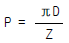
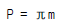
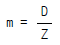
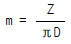
(정답률: 40%)
3과목: 임의구분
41. 파이프와 같이 두께가 얇은 곳의 결합에 이용되며, 누수를 방지하고 기밀 유지하는데 사용되는 나사는?
- 미터나사
- 휘트워드나사
- 유니파이나사
- 관용나사
(정답률: 50%)
42. 탄소강의 기계적 성질로 맞지 않는 사항은?
- 표준상태에서 탄소가 많을 수록 경도가 증가한다.
- 인장강도는 과공석강에서 최대가 된다.
- 탄소량이 많을 수록 냉간가공이 어렵다.
- 탄소강은 200-300℃에서 청열메짐이 일어난다.
(정답률: 41%)
43. 열경화성 수지 중 에서 경질성이 있고 베클라이트(bakelite)라고 불리우는 수지는?
- 요소 수지
- 페놀 수지
- 멜라민 수지
- 에폭시 수지
(정답률: 42%)
44. 마찰차 중에서 무단변속으로 사용할 수 없는 마찰차는?
- 원판 마찰차
- 홈 마찰차
- 구면 마찰차
- 원추 마찰차
(정답률: 42%)
45. 강도와 기밀을 필요로 하는 리벳 이음으로 보일러, 고압 탱크 등에 사용하는 리벳은?
- 강도용 리벳
- 저압용 리벳
- 보일러용 리벳
- 구조용 리벳
(정답률: 65%)
46. 경금속과 중금속의 구분되는 비중 값은?
- 1.5
- 2.5
- 3.5
- 4.5
(정답률: 62%)
47. 고온에서 재료에 일정하중이 가해질 때 시간의 경과에 따라 변형률이 증가되는 현상은?
- 크리프 (creep)
- 마모 (wear)
- 응력 (stress)
- 탄성 (elasticity)
(정답률: 56%)
48. 황동에 Pb 1.5∼3.7%을 첨가하여 절삭성을 좋게한 합금을 무엇이라 하는가?
- 쾌삭 황동
- 강력 황동
- 문쯔메탈
- 톰백
(정답률: 79%)
49. 두 축이 만나지도 평행하지도 않을 경우에 사용하는 기어가 아닌 것은?
- 웜 기어
- 베벨 기어
- 하이포이드 기어
- 나사 기어
(정답률: 47%)
50. 스프링에 하중이 작용하지 않고 있을 때의 스프링 높이를 무엇이라 하는가?
- 유효높이
- 최대높이
- 무부하높이
- 자유높이
(정답률: 37%)
51. 불규칙한 파형의 가는 실선 또는 지그재그 선을 사용하는 것은?
- 파단선
- 치수보조선
- 치수선
- 지시선
(정답률: 83%)
52. 바퀴의 암, 리브 등을 단면할 때에 가장 적합한 것은?
- 부분 단면도
- 한쪽(반) 단면도
- 회전 단면도
- 계단 단면도
(정답률: 54%)
53. 기어의 투상도 해독에 관한 설명으로 올바른 것은?
- 이끝원은 가는 실선으로 표시되어 있다.
- 피치원은 가는 2점 쇄선으로 되어 있다.
- 이골원(이뿌리원)은 가는 1점 쇄선으로 되어 있다.
- 잇줄방향은 보통 3개의 가는실선으로 표시되어 있다.
(정답률: 46%)
54. 40mm x 50mm 크기의 직사각형 단면을 척도 1/2 로 제도하면 도면상에 그려진 면적은 몇 mm2 인가?
- 500
- 1000
- 2000
- 8000
(정답률: 33%)
55. 보기 입체도의 화살표 방향이 정면이고 좌우 대칭일 때 우측면도로 가장 적합한 것은?
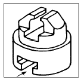
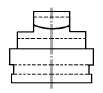
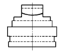
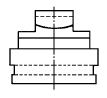
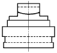
(정답률: 44%)
56. 경사키를 사용하는 보스의 키 홈의 깊이를 표시하는 방법은?
- 키 홈의 깊은쪽에서 표시
- 키 홈의 낮은쪽에서 표시
- 키 홈의 중간부분에 표시
- 깊은쪽과 낮은쪽 양쪽에 표시
(정답률: 49%)
57. 3각법으로 투상한 정면도와 평면도가 보기와 같이 도시되어 있을 때 우측면도의 투상으로 가장 적합한 것은?
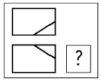
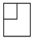
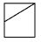
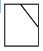
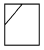
(정답률: 59%)
58. 보기 투상도에서 표시된
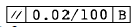
의 기호 해독으로 가장 적합한 것은?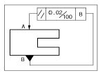
- 기준면 B의 길이는 100mm, A면은 이것과 평행도가 0.02 mm이다.
- A면은 기준면 B와 평행하되 구분구간 100mm 당 평행도는 0.02mm이다.
- B 면은 기준면과 A와 평행하되 100 mm 당 평행도는 0.02mm이다.
- 길이 100mm인 기준면 A와 B면의 평행도는 0.02mm이다.
(정답률: 54%)
59. 보기와 같은 입체를 제 3각법으로 나타낼 때 가장 적합한 투상도는? (단, 화살표 방향을 정면으로 한다.)
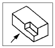
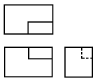
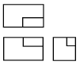
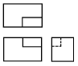
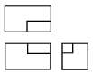
(정답률: 73%)
60. 도면의 같은 장소에 다음과 같은 종류의 선이 겹칠 때 선의 표시되는 우선 순위가 가장 먼저인 것은?
- 숨은선
- 절단선
- 중심선
- 치수 보조선
(정답률: 71%)